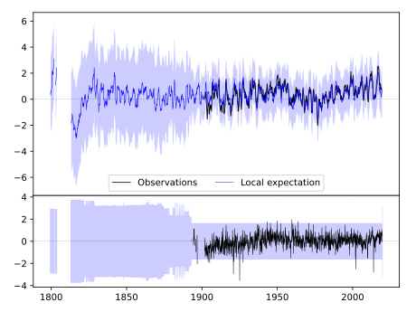
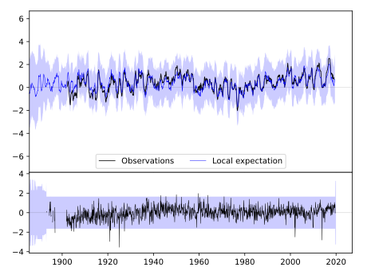
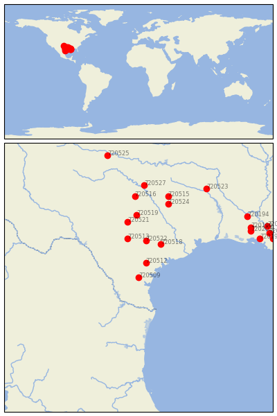

ALICE [USA]


| Neighbour | Name | Country | Distance | Lon/Lat | Years |
|---|
| 720509 | ALICE | USA | 0 | -98.1, 27.7 | 1893-2019 |
| 720512 | BEEVILLE 5 NE | USA | 97 | -97.7, 28.5 | 1893-2019 |
| 720522 | LULING | USA | 225 | -97.7, 29.7 | 1882-2019 |
| 720518 | HALLETTSVILLE 2 N | USA | 231 | -96.9, 29.5 | 1891-2019 |
| 720513 | BOERNE | USA | 240 | -98.7, 29.8 | 1878-2019 |
| 720521 | LLANO | USA | 338 | -98.7, 30.7 | 1891-2019 |
| 720519 | LAMPASAS | USA | 378 | -98.2, 31.1 | 1888-2019 |
| 720524 | MEXIA | USA | 470 | -96.5, 31.7 | 1888-2019 |
| 720516 | DUBLIN 2SE | USA | 489 | -98.3, 32.1 | 1893-2019 |
| 720515 | CORSICANA | USA | 512 | -96.5, 32.1 | 1874-2019 |
| 720527 | WEATHERFORD | USA | 556 | -97.8, 32.7 | 1893-2019 |
| 720523 | MARSHALL | USA | 641 | -94.4, 32.5 | 1893-2019 |
| 720202 | LAFAYETTE FCWOS | USA | 655 | -92.0, 30.2 | 1884-2019 |
| 720199 | GRAND COTEAU | USA | 664 | -92.0, 30.4 | 1888-2019 |
| 720194 | BUNKIE | USA | 679 | -92.2, 31.0 | 1882-2019 |
| 720198 | FRANKLIN 3 NW | USA | 684 | -91.5, 29.8 | 1882-2019 |
| 720197 | DONALDSONVILLE 4 SW | USA | 740 | -91.0, 30.1 | 1884-2019 |
| 720193 | BATON ROUGE METRO AP | USA | 747 | -91.1, 30.5 | 1822-2019 |
| 720204 | THIBODAUX 3 ESE | USA | 748 | -90.8, 29.8 | 1892-2019 |
| 720525 | QUANAH 2 SW | USA | 751 | -99.8, 34.3 | 1891-2019 |